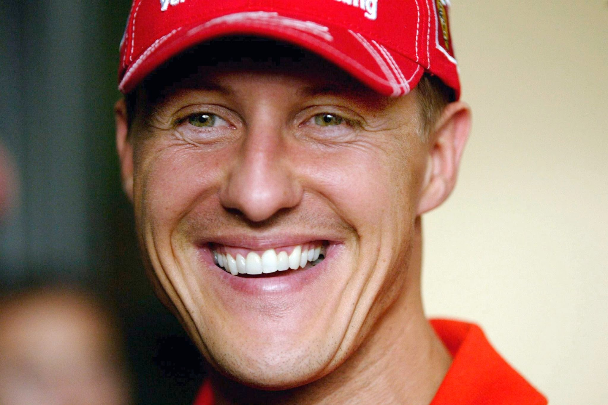

İlk Yılları ve Efsanenin Başlangıcı
Almanya'nın Köln şehri yakınlarında Hürth-Hermülheim'de, Rolf ve Elisabeth çiftinin çocukları olarak doğar. Henüz dört yaşında iken babası kendi olanakları ile ona basit bir karting aracı yapar. Karting'e çok ilgi gösteren Schumacher'i ailesi, Kerpen-Horrem'de bir karting pistine götürürler ve Schumacher bu karting kulübünün en genç üyesi olur. Altı yaşına geldiğinde babası ona kullanılmış, hurda parçalardan daha uygun bir karting aracı yapar ve Michael bu karting aracıyla ilk kulüp şampiyonluğunu kazanır. Rolf, oğlunun yarışmasını desteklemek için ikinci iş olarak karting pistinde tamirat yapmaya ve karting araçlarını kiralamaya başlar. Bu arada Elisabeth de karting pistinin kantininde çalışmaktadır. Birden fazla işte çalışmalarına karşın, Schumacher ailesinin Michael'in ihtiyaç duyduğu nitelikte motor alabilmek için yeterli imkânları hala yoktur. Zaman zaman yerel gazetelerde haberleri çıkan Michael için gereken destek yerel işadamları tarafından sağlanır ve bu sayede Michael yarışmaya devam edebilir.
Alman yasaları uyarınca, karting pilotu lisansı alabilmek için istenilen yaş sınırı 14'tür. Lisans olmadan ulusal yarışmalara katılamayacak olan Michael'ın gelişiminin durmaması için, 1981'de, henüz 12 yaşında iken, lisansını Lüksemburg'dan alır. 1983 yılında Alman kart lisansını da alan Michael, 1984 yılında Almanya Junior Karting Şampiyonası'nı kazanır. 1985'te Adolf Neubert'in Eurokart takımına katılır. 1987 yılına gelindiğinde artık Almanya ve Avrupa Karting Şampiyonudur. 1988'de Almanya Formula Ford ve Formula König serileri ile tek koltuklu yarış araçları serilerine ilk ciddi adımını atar.
Schumacher'in 1990 yılında Almanya Formula 3 Şampiyonası'nı kazandığı araç.
1989 yılı için Willi Weber'in WTS Formula 3 takımı ile anlaşma imzalar. Bu imzayla gelecek iki yıl için Weber'in finansmanı altında yarışır ve 1990'da Almanya Formula 3 şampiyonluğunu kazanır. 1989 yılının sonunda Formula 3 serisinden de rakipleri olan Heinz-Harald Frentzen ve Karl Wendlinger ile birlikte Mercedes Junior Racing programına katılır ve World Sports-Prototype Şampiyonası'nda yarışır. Bu karar, aslında genç bir sürücü için yanlış bir harekettir, zira Michael'in birçok rakibi, Formula 1'e giden yol için F3000 serisine katılmaktadır. Fakat Weber, Michael'e güçlü araçların, uzun soluklu yarışların ve basın toplantılarının, kariyerinin geleceği açısından çok daha faydalı olacağı tavsiyesinde bulunmuştur. 1990 sezonunun son yarışı olan Autódromo Hermanos Rodríguez'de bir Sauber-Mercedes C11 ile zafere ulaşır ve sezonu pilotlar şampiyonasında 5.likle tamamlar. 1991 sezonunda da aynı takımla yarışmaya devam eder. Yine sezonun son yarışında Japonya'da Autopolis pistinde zafere ulaşır, pilotlar şampiyonasını 9. tamamlamıştır. Aynı sezon, Japonya Formula 3000 serisinde bir yarışa katılır ve o yarışı da 2.likle tamamlar.
Bugünden Michael'in Formula 1 öncesi erken yıllarına bakıldığında ilginç bir nokta, Heinz-Harald Frentzen'in ve hatta Karl Wendlinger'in daha büyük yetenekler olduğu ve çok büyük gelecekler vadettikleri hemen tüm yarış camiasında kabul görmekte iken, bu isimlerin Formula 1 kariyerlerinin, Schumacher'in Formula 1 kariyerinin yanına dahi yaklaşamamasıdır.
Formula 1 Kariyeri
Genel Bakış
Michael, kritik anlarda hızlı turlar atma ve gerektiğinde limitleri sonuna kadar zorlama gibi hususlardaki yeteneklerini, kariyerinin her döneminde geliştirme gayretinde olmuştur. Henüz onlu yaşlarının ortalarında karting pistinde yağmur altında, tek başına antrenmanlar yaptığı görülmüştür. Aynı çaba, Ayrton Senna gibi yağmur altında üst düzey performansı sergileyebilen tüm büyük pilotlarda gözlenebilen bir özelliktir. Günümüzde takımlar, teknoloji marifetiyle pistlerde yağmur koşulları yaratarak pilotlarının ıslak zemin performansını geliştirme gayretindedirler. Motor sporları yazarı Christopher Hilton'ın işaret ettiği gibi "Bir pilotun yeteneğinin önemli bir ölçüsü de ıslak zemin performansıdır, çünkü en hassas araç kontrolü ve en nazik sürüşe bu gibi ağır pist koşullarında ihtiyaç duyulur". Diğer büyük pilotlar gibi Michael de parlak bir ıslak zemin performansına sahiptir. Michael 1991'den 2003 sezonunun sonuna kadar katıdığı grand prixlerde, ıslak zeminde koşulan 30 yarışın 17'sini kazanmıştır. Michael'in en iyi performanslarından bazıları bu tür ağır koşullar altında gerçekleşmiştir, bu performanlarıyla da "Regenkönig" (yağmur kralı) ya da "Regenmeister" (yağmur ustası) unvanlarını almıştır.
Michael Schumacher için "Schumi", "Schuey" ya da "Schu" lakapları kullanılmaktadır. Formula 1, Michael Schumacher ile birlikte, Almanya'da arka sıralarda bir spor olmaktan çıkmış ve popülaritesi futbolla yarışabilir hâle gelmiştir.
Takımlar
Jordan: 1991
25 Ağustos 1991'de koşulan Belçika Grand Prix'ine Jordan Ford takımının pilotu Bertrand Gachot'nun aşırı hız cezası nedeniyle hapse atılması sebebiyle bu pilotun yerine 32 numaralı araçla çıkmıştır. Finansal olarak da takıma katkı sağlayacak bir pilot arayan takımın sahibi Eddie Jordan, Willi Weber'in 150.000 sterlin ödemesiyle boş koltuğu Michael'e verir. Sürücülük yeteneklerini ön plana çıkaran bir pist olarak tanınan Spa-Franchorchamps pistinde yapılan bu yarışta, daha önce bu pistte hiç yarışmamış deneyimsiz bir pilot olarak geldi. Yarış öncesinde pisti tanımak için bir bisikletle pist üzerinde sadece bir tur atmasına rağmen, sıralama turlarında 11 yıllık Formula 1 deneyimine sahip takım arkadaşı Andrea de Cesaris'i geride bırakarak yarışa 7. sırada başlama hakkını elde etti. Michael'in bu derecesi, Jordan takımının o yıl elde ettiği en iyi grid pozisyonudur. Ancak yarışın daha ilk turunda debriyaj problemi nedeniyle yarışı terk etmek zorunda kaldı.
Benetton: 1991-1995
1991
Belçika Grand Prix'nde gösterdiği bu muhteşem performansın ardından tüm dikkatleri üzerine çekti. Bu yarışının ardından Ford motoruyla yarışan Benetton Formula takımıyla bir anlaşma imzaladı. Jordan takımı, bu anlaşmaya karşı İngiliz mahkemelerinde itiraz başvurusunda bulunsa da, bu başvuru Jordan takımı ile bir kontratı bulunmaması nedeniyle reddedildi. Bunun üzerine sezonu Benetton takımında tamamladı. 1991 yılındaki en iyi derecesi, katıldığı ikinci yarışta elde ettiği 5.liktir. Bu dereceyi, İtalya Grand Prix'nde, takım arkadaşı Nelson Piquet'nin önünde elde etmiştir.
Sezonu 6 yarışta aldığı 4 puanla, 14. sırada tamamladı.
1992-1993
1992 sezonunun başında Sauber takımı, Formula 1 yarışlarında yer almak için planlar yapıyordu. Sauber, böyle bir durumda Mercedes motoru kullanacaktı ve Michael'in kontratında da, Mercedes'in Formula 1'e girmesi durumunda onlarla yarışabileceğine ilişkin bir madde bulunuyordu. Michael, Benetton'da yarışmaya devam kararı aldı. Daha sonra Peter Sauber "Schumacher bizimle yarışmak istemedi, neden zorlayayım ki" demiştir.
1992, Williams takımının Nigel Mansell ve Riccardo Patrese ile yarışları domine ettiği bir sezon oldu. Michael kariyerinin ilk podyumunu Meksika Grand Prix'inde üçüncü sırayı alarak elde etti. Ardından da ilk galibiyet, kariyerinin ilk yarışına çıktığı Spa-Francorcamps pistindeki Belçika Grand Prix'inde geldi. Nigel Mansell'in pole pozisyonunda, Ayrton Senna'nın da ikinci sırada başladığı yarışta üçüncü sıradan start alan Michael, yağmurun yağmaya başlamasıyla birlikte ön sıralarda yarışan Ayrton Senna dışındaki bütün pilotlar gibi yağmur lastiklerine geçti. Oynadığı kumar tutmayan Senna da ilerleyen turlarda yağmur lastiklerine geçti, ancak pozisyonunu kaybetmiş oldu. Pistin kurumaya başlamasıyla birlikte bazı pilotlardan spinler geldi. Michael da bir pist dışına çıkma yaşayıp lastiklerine zarar verince, o turun sonunda pit stop yaparak kuru zemin lastiklerine geçti. Mansell ve Patrese lastik değiştirmekte geç kalınca Michael liderliği ele geçirmiş oldu. Şans, strateji ve yeteneğin birleşiminden oluşan bir galibiyet alan Michael, yarışı Mansell'in 36 saniye önünde tamamladı. Daha sonra Michael, Spa Francorchamps için "açık ara en sevdiğim pist" diyecektir.
1992 sezonunu, 53 puanla 3. sırada bitirdi.
1993 sezonu yine Williams F1 pilotları Damon Hill ve 'Profesör' lakaplı Alain Prost tarafından domine edildi. Benetton Formula takımı, aktif süspansiyon ve çekiş kontrolü sistemlerini sezonun ilerleyen yarışlarında kullanmaya başladı. Çekiş kontrolünü ilk kez Monako Grand Prix'inde, aktif süspansiyonu ise ilk kez Avrupa Grand Prix'inde kullandılar ve bu sistemleri en geç kullanıma sokan takımlar arasında yer aldılar. Williams takımının aktif süspansiyon sistemini ilk kez 1987 sezonunda, McLaren ve Ferrari ise 1992 sezonunun son yarışlarında aktif sistemleri araçlarında kullandılar.
Michael, 1993 sezonunda sadece Portekiz Grand Prix'ini kazandı, bu yarışı Alain Prost'un 0.9 saniye önünde galibiyete ulaştı.
1993 sezonunu, 52 puanla 4. sırada tamamladı.
1994-1995: Şampiyonluk Yılları
Schumacher, şampiyonluk için Williams adına yarışan Ayrton Senna ile rekabet etmesi beklenirken, San Marino Grand Prix'nde Senna'nın geçirdiği kaza sonucunda hayatını kaybetmesinin ardından, Williams F1'in diğer pilotu Damon Hill ile sezon sonuna kadar mücadele etti.
Schumacher'in 1994'te şampiyonluğu kazandığı Benetton B194.
Sezonun ilk 7 yarışından 6'sını kazanarak 1965'te Jim Clark'ın kırdığı rekora ortak olan ve sezona çok iyi bir başlangıç yaparak büyük bir puan farkı oluşturan Schumacher, sezon ortasında bir takım cezalar alması nedeniyle bu avantajını kaybetti. İngiltere Grand Prix'nde, ısınma turunda önündeki pilotu geçerek siyah bayrak ile yarıştan diskalifiye edildi. Ancak bunu umursamayıp yarışa başlamak isteyen Schumacher, bir sonraki yarış için de ceza aldı. Belçika Grand Prix'sini kazanmasına rağmen, yarış sonrasında aracında yapılan inceleme sonucunda, aracının alt kısmında bulunan tahta parçanın kurallara aykırı olduğu anlaşıldı ve birinciliği iptal edildi.
Sezonun son yarışı olan Avustralya Grand Prix'nde, rakibi Damon Hill'in arkadan yaptığı atağı görmeyerek virajda iç kısıma Hill'in önüne kırması sonucu rakibine çarptı ve takla atarak yarış dışı kaldı. Ancak bu kazada aracı hasar alan Damon Hill de yarışa devam edemedi.
1994 sezonunu, bu olayın neticesinde 92 puanla şampiyon olarak tamamladı.
1995 sezonuna başlamadan Benetton Formula takımı, Renault motoruna geçiş yaptı. Williams takımı da o sezon için Renault motorunu kullanıyordu. 1995 sezonu da yine Williams F1 pilotu Damon Hill ile çekişmeli bir mücadeleye sahne oldu. İngiltere Grand Prix ve İtalya Grand Prix'nde Damon Hill'in geçiş hamlesi esnasında arkadan çarpması sonucunda iki pilot da yarış dışı kaldı. Belçika Grand Prix'inin sıralama turlarında 4. olmasına rağmen aldığı ceza nedeniyle yarışa 16. sıradan başladı. Yağmur altında yapılan yarışta, ıslak zemin lastiği kullanan rakiplerine karşı kuru zemin lastikleriyle mücadele ederek zafere ulaştı. Sezon sonunda en yakın rakibi Damon Hill ile arasında 33 puan fark oluşturarak şampiyonluğu elde etti. Bu yıl, aynı zamanda 9 yarış kazanarak, Nigel Mansell'a ait olan ve 1992 sezonunda kırdığı "bir sezonda en fazla yarış kazanma rekoru"na da ortak oldu.
Schumacher, 1995 sezonundaki 17 yarışın 9'unu kazanmış, 11 kez podyumda yer almıştır. Sadece bir kez, Belçika Grand Prix'nde 4.lükten kötü bir sıralama derecesi elde etti, ancak o yarışta da birinci gelmeyi başardı.
Sezonu 102 puanla şampiyon olarak tamamladı.
2013'teki Kayak Kazası
29 Aralık 2013'te Schumacher, o zamanlar 14 yaşındaki oğlu Mick ile Fransız Alpleri'nde Méribel'in yukarısındaki Dent de Burgin'in altında Combe de Saulire'den inerken kayak yapıyordu. Piste Chamois ve Piste Mauduit arasındaki[4][5] güvenli olmayan bir pist dışı alanda kayarken düştü ve başını bir kayaya çarptı ve kayak kaskı takmasına rağmen ciddi bir kafa travması geçirdi. Doktorlarına göre, kask takmamış olsaydı büyük ihtimalle ölecekti.[6] İki cerrahi müdahalede bulunduğu Grenoble Hastanesi'ne hava yoluyla kaldırıldı.[7] Schumacher, travmatik beyin hasarı nedeniyle tıbbi olarak yapay komaya sokuldu.[8][9] Mart 2014'e kadar, küçük cesaret verici işaretler vardı ve Nisan ayının başlarında, tıbbi olarak tetiklenen komadan yavaş yavaş çekilirken bilinç belirtileri gösteriyordu.[10]
Haziran 2014'te Schumacher, daha fazla rehabilitasyon için İsviçre'deki Lozan Üniversite Hastanesi'ndeki Grenoble Hastanesi'nden ayrıldı.[11] Eylül 2014'te Schumacher hastaneden ayrıldı ve daha fazla rehabilitasyon için evine geri getirildi.[12] İki ay sonra, Schumacher'in "felçli ve tekerlekli sandalyede" ve "konuşamıyor ve hafıza sorunları var" olduğu bildirildi.[13] Mayıs 2015'te Schumacher'in menajeri Sabine Kehm, durumunun "yaralanmasının ciddiyeti düşünüldüğünde" yavaş yavaş iyileştiğini belirtti.[14]
Eylül 2016'da Schumacher'in avukatı Felix Damm bir Alman mahkemesine, Aralık 2015'te Alman yayın Die Bunte'de tekrar yürüyebileceğine dair haberlere yanıt olarak müvekkilinin "yürüyemediğini" söyledi.[15] Temmuz 2019'da eski Ferrari yöneticisi Jean Todt, Schumacher'in "iyi ilerleme" kaydettiğini ancak aynı zamanda "iletişim kurmakta zorlandığını" belirtti. Todt ayrıca Schumacher'in evindeki televizyonda Formula 1 yarışlarını izleyebildiğini söyledi.[16] O yılın Eylül ayında Le Parisien, Schumacher'in "hücre cerrahisinde öncü" olarak tanımlanan kardiyovasküler cerrah Philippe Menasché tarafından tedavi için Paris'teki Hôpital Européen Georges-Pompidou'ya kabul edildiğini bildirdi. Anti-inflamatuar kök hücre perfüzyonu almasını içeren tedaviyi takiben, sağlık personeli Schumacher'in "bilinçli" olduğunu belirtti.
